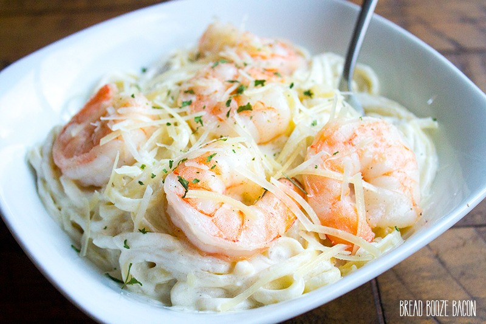
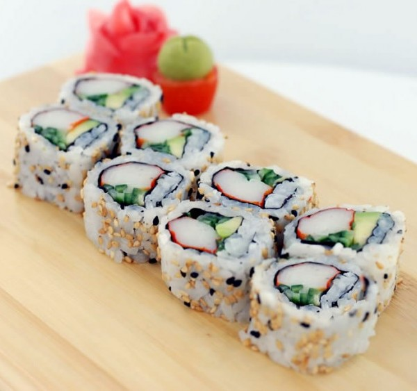

This site has three recipes on it, or will have three recipes on it when I finish. There is a quote that one of my teachers used to say Food changes people, for starters it makes them heavier then happier.
Guide
Shrimp Alfredo

Ingredients
1 Pound of Fettuccine Pasta
1 Tablespoon of Butter
1 Pound Cooked Shrimp - Peeled and De-Veined
4 Cloves Garlic, Minced
1 Cup Half-and-Half
6 Tablespoons Grated Parmesan Cheese
1 Tablespoon Chopped Fresh Parsley
Salt for Taste
Steps
Bring a large pot of lightly salted water to a boil. Add pasta and cook for 8 to 10 minutes or until cooked; drain.
In a large skillet, cook and stir shrimp and garlic in the butter for about one minute. Pour in half-and-half; stir. Sprinkle Parmesan cheese in one tablespoon at a time, stirring constantly. After all Parmesan is added, mix in parsley and salt. Stir frequently making sure it does not boil. Sauce will take a while to thicken.
When sauce has thickened, combine with cooked pasta noodles; serve hot.
California Roll

Ingredients
Juice 1/2 of Lemon
1 Medium Avocado - Peeled, Pitted, and Sliced into 4 Thick Pieces
4 Sheets of Nari
1/2 Batch of Sushi Rice, Recipe Follows
1/3 Cup Sesame Seeds - Toasted
1 Small Cucumber - Peeled, Seeded, and Cut into Matchstick-Size Pieces
4 Crab Sticks - Torn into Pieces
Pickled Ginger - For Serving
Wasabi - For Serving
Soy Sauce - For Serving
Sushi Rice
2 Cups Sushi Rice or Short Grain Rice
2 Cups Water, Plus Extra for Rinsing Rice
2 Tablespoons Rice Vinegar
2 Tablespoons Sugar
1 Tablespoon Kosher Salt
Steps
Squeeze lemon juice over the avocado to prevent browning
Cover a bamboo rolling mat with plastic wrap
Cut nori sheets in half cross-wise
Lay 1 sheet of nori shiny side down, on the plastic covered mat
Wet fingers with water and spread 1/2 cup of rice evenly onto the nori
Sprinkle the rice with sesame seeds
Turn the sheet of nori over so the rice is down
Place 1/8 of cucumber, avocado, and crab sticks in the center of the sheet
Grab the edge of the mat closest to you ,keeping the fillings in place with your fingers, and roll it into a tight cylinder, using the mat to shape the cylinder
Pull away mat and repeat until all of the rice is used
Cut into 6 pieces and serve with ginger, wasabi, and soy sauce
Steamed Lobster
Ingredients
Lobster
Salt
Steps
Choose a pot large enough to hold all the lobsters comfortably; do not crowd them. A 4-5 gallon pot can handle 6 to 8 pounds of lobsters.
Put 2 inches of seawater or salted water in the bottom of a large kettle.
Set steaming rack inside the pot and bring to a rolling boil over high heat.
Add the live lobsters one at a time, cover the pot, and start timing.
Halfway through, lift the lid (Careful – The steam is hot!) and shift the lobsters around so they cook evenly.